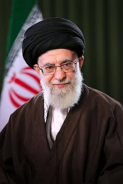
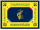

生平概述
阿里·侯赛因·哈梅内伊（1939年4月19日-2026年2月28日）是伊朗政治家和什叶派宗教领袖，自1989年起担任伊朗第二任最高领袖，直至2026年遇刺身亡。他曾于1981年至1989年担任伊朗总统。作为最高领袖，他的任期长达36年6个月，使他成为中东地区任期最长的国家元首。
哈梅内伊出生于霍拉桑地区的马什哈德，在家乡的宗教学院学习，后于1958年定居库姆，师从鲁霍拉·霍梅尼。他积极参与反对伊朗国王穆罕默德·礼萨·巴列维的运动，在巴列维政权统治期间被逮捕六次，并被流放三年。

📅 重要日期
出生：1939年4月19日
担任总统：1981-1989年
担任最高领袖：1989-2026年
逝世：2026年2月28日
🎓 教育背景
在马什哈德宗教学院接受基础和高等神学教育，师从谢赫·哈什姆·卡兹维尼和阿亚图拉·米拉尼。1958年赴库姆深造，师从霍梅尼。
🏛️ 政治生涯
伊朗革命后担任多个重要职位，包括德黑兰周五祈祷领导人、国防副部长。1981年当选伊朗总统，任期8年。1989年被选为最高领袖。
💪 权力基础
通过建立庞大的个人网络、控制伊斯兰革命卫队、掌控主要宗教机构和媒体，逐步巩固权力。拥有对伊朗军队、司法和立法部门的直接或间接控制权。
关键事实
重要时间线
1939年4月19日
阿里·侯赛因·哈梅内伊在马什哈德出生
1958年
定居库姆，开始师从霍梅尼学习伊斯兰教法
1979年
伊朗伊斯兰革命成功，哈梅内伊担任多个政府职位
1981年6月27日
在清真寺遭炸弹袭击，右臂永久瘫痪
1981-1989年
担任伊朗总统，任期内伊朗经历伊朗-伊拉克战争
1989年6月4日
被专家委员会选举为伊朗最高领袖
1989-2026年
担任伊朗最高领袖36年6个月，成为中东任期最长的国家元首
2025年6月13日
十二日战争开始，以色列对伊朗发动军事打击
2026年2月28日
哈梅内伊在美国和以色列的导弹袭击中遇刺身亡
相关图片

🏛️ 政治遗产
哈梅内伊通过建立"平行结构"来削弱各政府机构的权力，同时加强最高领袖办公室的权力。他将伊斯兰革命卫队转变为国内控制和地区影响力的主要工具。
🌐 国际关系
哈梅内伊的外交政策以什叶派伊斯兰主义为中心，支持"抵抗轴心"联盟，包括叙利亚、伊拉克、也门和加沙的武装组织。他坚决反对以色列和美国。
📊 经济政策
支持国有企业私有化，利用伊朗丰富的石油和天然气资源，将伊朗转变为"能源超级大国"。通过Setad基金会控制庞大的经济帝国。
⚛️ 核政策
支持伊朗民用核计划，同时发布教令禁止生产大规模杀伤性武器。在2015年伊朗核协议中发挥关键作用，但在美国2018年退出后采取强硬立场。